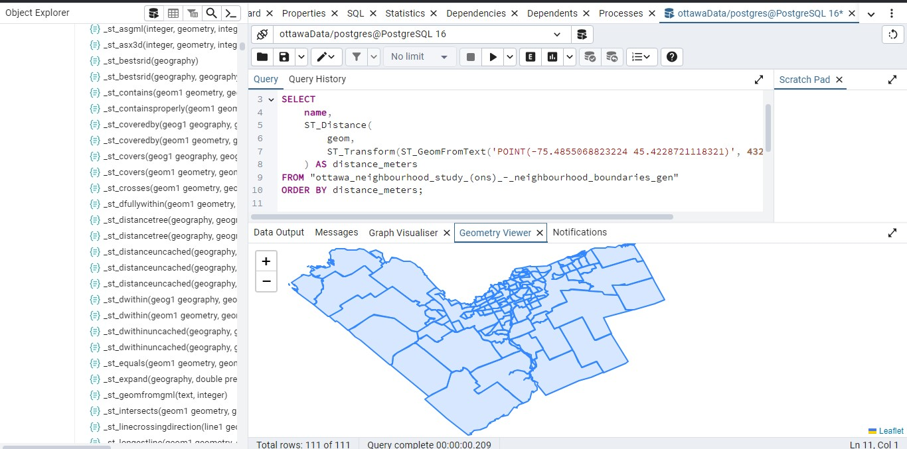
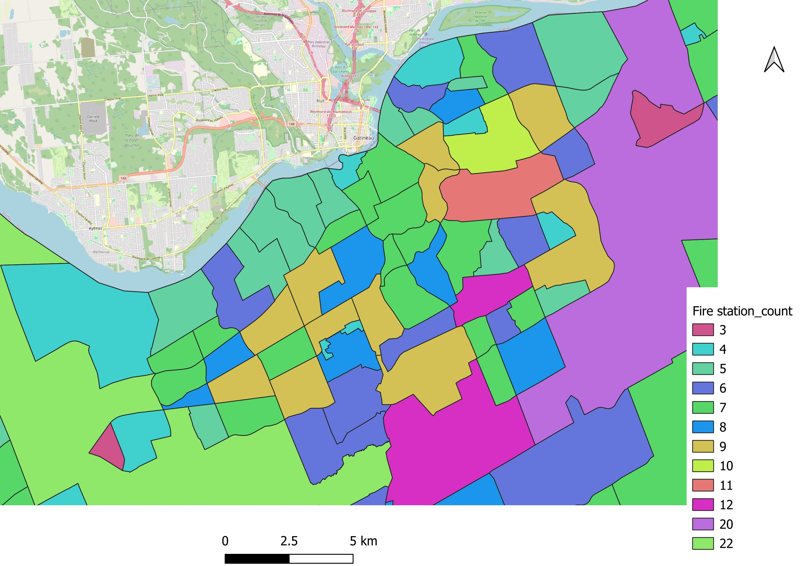
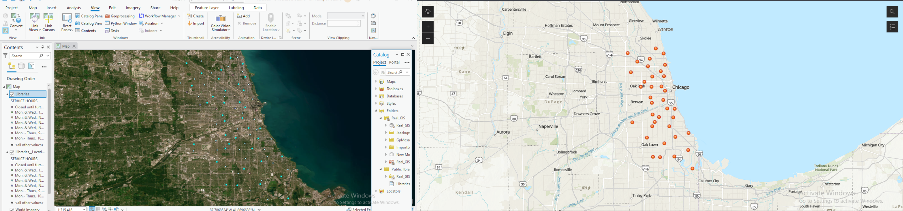
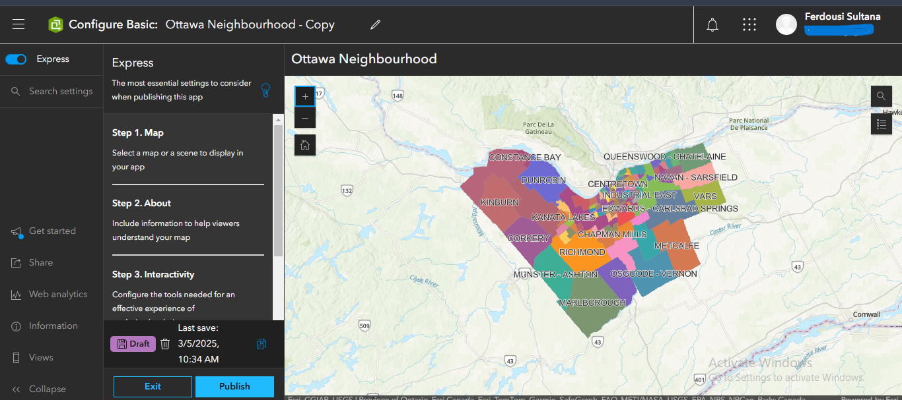
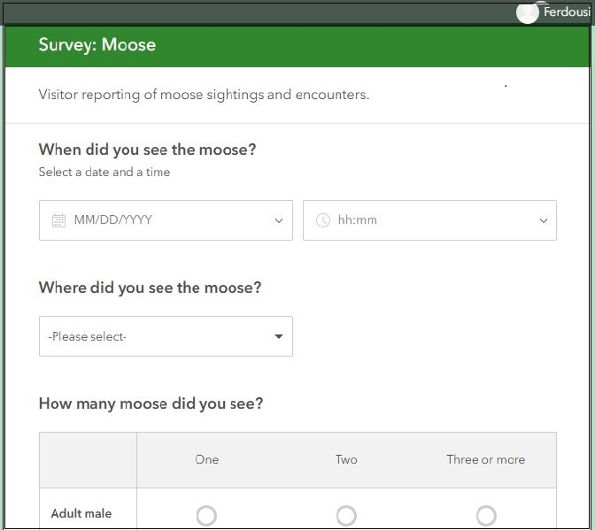
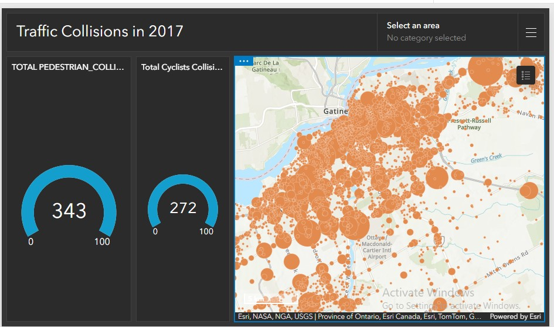
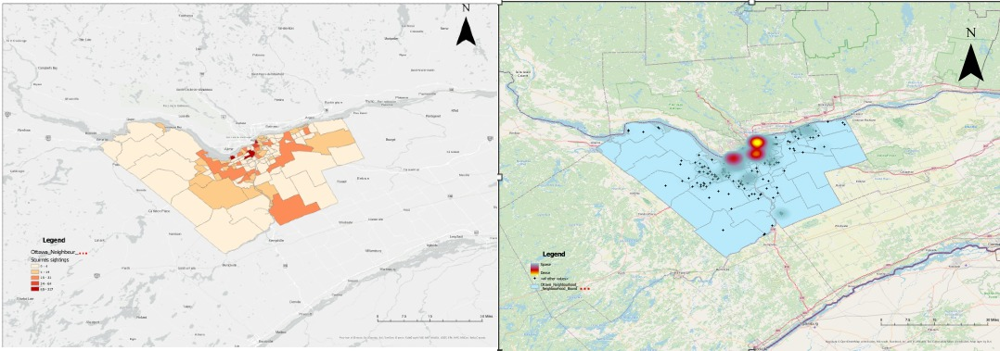
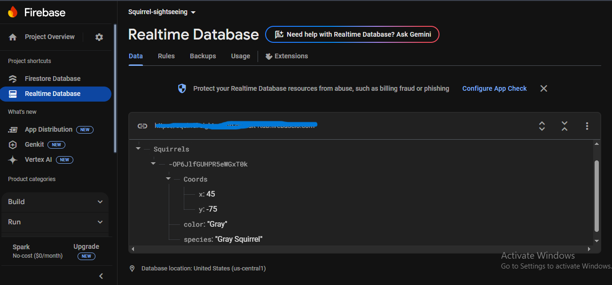

All Projects

Image Segmentation using Deep Learning (U-Net Architecture)
Built a U-Net-based deep learning pipeline for pixel-wise segmentation of 500+ wildlife images, achieving an IoU of 0.79 for accurate foreground-background separation.
Read More
Automated Site Selection for Wastewater Treatment Plant
Automated site selection for a wastewater treatment plant using ArcGIS Pro ModelBuilder by applying multiple spatial criteria, including proximity to rivers, city limits, and exclusion zones.
Read More
Land Cover Classification Using Satellite Imagery
Supervised land cover classification using satellite imagery in QGIS.
Read More
GIS Automation using ArcPy & ArcGIS Pro
Developed an ArcPy-based GIS automation workflow to programmatically manipulate map layout elements in ArcGIS Pro.
Read More
Vehicle Routing Optimization for GHG Reduction
Used ArcGIS Pro to optimize delivery routes for emission reduction, applying network analysis and VRP tools to improve efficiency and minimize environmental impact.
Read More
Spatial Database Management with PostgreSQL/PostGIS
Created a spatially enabled PostgreSQL database with PostGIS to manage, validate, and analyze Ottawa neighborhood data.
Read More
Mapping Public Facilities and Spatial Analysis of Fire Stations
Mapped and analyzed the spatial distribution of public facilities in Ottawa using QGIS.
Read More
Web Mapping
Developed an interactive web map using ArcGIS Pro and ArcGIS Online, processing spatial data and building an Instant App with search, filtering, and user-friendly features.
Read More
Landfill Sites and Population Density Analysis in Dhaka
Conducted geospatial analysis of two major landfill sites in Dhaka, mapping land cover and estimating population exposure within 2 km buffers.
Read More
Designing and Publishing Surveys
Designed, published, and managed interactive surveys using ArcGIS Survey123 to collect real-time field data through web and mobile interfaces.
Read More
Interactive ArcGIS Dashboard for Traffic Collisions in Ottawa (2017)
Analyzed and visualized traffic collision data in ArcGIS Online, creating an interactive web map and dashboard.
Read More
Squirrel Sightings: Heat Map and Choropleth Analysis in Ottawa
Processed and visualized squirrel sighting data in ArcGIS Pro, creating heat maps and choropleth maps.
Read More
Methane Concentration Trends in Ottawa (Sentinel-5P Analysis)
Analyzed spatial and temporal methane concentration trends in Ottawa using Sentinel-5P satellite data.
Read More
Surface Water Detection in Ottawa - NDWI
Used Google Earth Engine to analyze surface water bodies in Ottawa with NDWI, leveraging Sentinel-2 imagery.
Read More
Squirrel Sightings Tracker
Developed a Python application to collect and upload squirrel sighting data to Firebase Realtime Database.
Read More